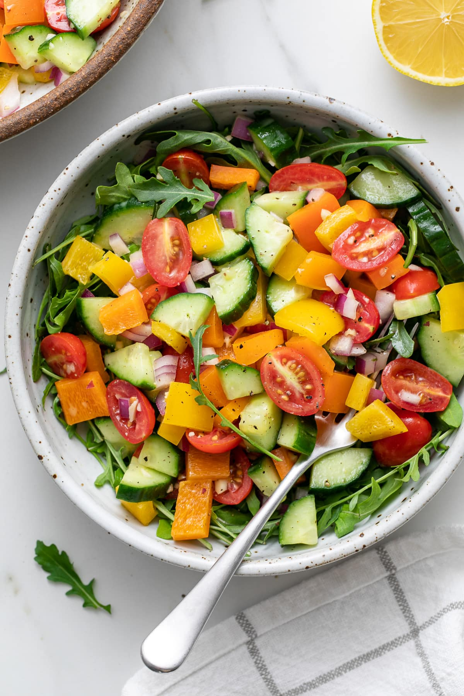

Hobbies
Homepage
Chiken curry:
Recipe:
2 Tbsp olive oil.
1 small yellow onion, chopped (1 cup)
4 garlic cloves, minced (1 1/2 Tbsp)
1 Tbsp peeled and minced fresh ginger.
1 cup low-sodium chicken broth.
3/4 cup drained canned diced tomatoes or peeled, seeded, diced fresh tomatoes.
Salt
Cayenne pepper, to taste.
Weekend barbeque:
Recipe:
Everything you lust for...in a skewer.
Mushroom cream soup:
Recipe:
90g butter.
2 medium onions, roughly chopped.
1 garlic clove, crushed.
500g mushrooms, finely chopped (chestnut or button mushrooms work well)
2 tbsp plain flour.
1l hot chicken stock.
1 bay leaf.
4 tbsp single cream.
Vegetable salad:

Recipe:
1 cucumber, peeled and chopped.
2 fresh tomatoes, chopped.
2 green onion, minced.
1 red bell pepper, chopped.
5 radishes, chopped.
1 small jicama, peeled and julienned.
5 romaine lettuce leaves, torn into bite size pieces.
1 clove garlic, minced.